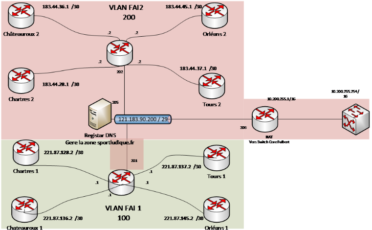

8/ NAT
Configuration du NAT
Qu'est ce que le NAT ?
NAT (Network Address Translation) est un processus de modification des adresses IP et des ports source et de destination. La traduction d'adresses réduit le besoin d'adresses publiques IPv4 et masque les plages d'adresses réseau privées. Le processus est généralement effectué par des routeurs ou des pare-feu.
Schéma du routeur

Configuration des Routeurs
Pour la configuration des routeurs on a commencé à faire la configuration sur le LAN à l'aide d'un routeur de notre réseau (172.28.0.0/19) qui sera par la suite connecté au routeur : Chateauroux 1 qui a pour adresse 221.87.136.2/30.
Nous avons commencé par activer le IP routing sur le routeur à l'aide de cette commande :
conf t
ip routing
Configuration des interfaces
Par la suite on a configurer les interfaces suivantes :
GigabitEthernet 0/0 et GigabitEthernet 0/1
Selon le brassage physique que vous faites vous auriez a définir si le port 0/0 et le port outside ou inside et de même pour le port 0/1.
Dans notre cas nous avons choisis que le port 0/0 aller être le port outside donc connecter avec l'extérieur (internet), et donc le port 0/1 est donc le port inside donc connecter à notre réseau.
Configuration ADSL
Port GigabitEthernet 0/0 :
conf t
int GigabitEthernet 0/0
ip address 221.87.136.2 255.255.255.252 <-- Correspond à l'IP du routeur ADSL
ip nat outside <-- Réseau Externe
Port GigabitEthernet 0/1 :
conf t
int GigabitEthernet 0/1
ip address 172.28.3.253 255.255.255.0 <-- Correspond à la passerelle pour entrer dans notre réseau LAN
ip nat inside <-- Réseau Interne
Pour la traduction d'adresse :
ip nat inside source list 1 interface gigabitEthernet 0/0 overload
Puis on a configurer l'IP route par défaut :
ip route 0.0.0.0 0.0.0.0 221.87.136.1
access-list 1 permit 172.28.0.0 0.0.31.255
Configuration Fibre
Port GigabitEthernet 0/0 :
conf t
int GigabitEthernet 0/0
ip address 183.44.36.1 255.255.255.252 <-- Correspond à l'IP du routeur ADSL
ip nat outside <-- Réseau Externe
Port GigabitEthernet 0/1 :
conf t
int GigabitEthernet 0/1
ip address 172.28.3.253 255.255.255.0 <-- Correspond à la passerelle pour entrer dans notre réseau LAN
ip nat inside <-- Réseau Interne
Pour la traduction d'adresse :
ip nat inside source list 1 interface gigabitEthernet 0/0 overload
Puis on a configurer l'IP route par défaut :
ip route 0.0.0.0 0.0.0.0 183.44.36.2
access-list 1 permit 172.28.0.0 0.0.31.255
Capture de trafic réseau à d'un port mirroring
Le port mirroring est une fonctionnalité de gestion de réseau qui permet de copier le trafic réseau provenant d'un ou plusieurs ports d'un commutateur réseau (ou switch) vers un autre port spécialement configuré à cet effet, appelé "port miroir" ou "port de surveillance." Cette fonctionnalité est couramment utilisée à des fins de dépannage, de surveillance réseau et d'analyse du trafic.
° Pour appliquer le port mirroring sur le port source :
conf t
monitor session 1 source interface [nom et numéro de port] both
° Pour appliquer le port mirroring sur le port destination :
conf t
monitor session 1 destination interface [nom et numéro de port]
° Pour vérifier si la fonctionnalité s'est bien appliquée :
show monitor session 1